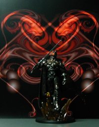
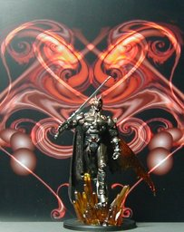
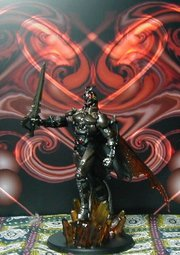

S.I.C. 匠魂 Vol. 6 シャドームーン (アーティストカラー ver.)



S.I.C. 匠魂 vol.6 のシャドームーンです。ゼロワンシークレットカラー以来のアーティストカラーですね。私はシャドームーンには思い入れがなかったので買う気がなかったのですが、アーティストカラーということで安めなのに、色は一番カッコよかったので、買っちゃいました。 赤く光る背景だと普通に撮るとボヤけた画面になっちゃうので、撮るのに苦労しました。 ちなみに、匠魂の仮面ライダーシリーズの中では一番お気に入りなフィギュアかも。ブラックは本放送はほとんど見てなかったと思いますが、主題歌は RX ともどもカラオケでシャウトしてました。あ、いや、シャウトする場所はフィーリングで。:-) 背景は Winamp の MilkDrop プラグインを WinShot したものです。 更新：2006-06-17 初公開：2006年06月17日 22:48:01 最新版：2006年07月01日 23:08:30
Trackbacks: 《1st republic mortgage》 from 1st republic mortgage calculate insurance mortgage deduct mortgage interest fixed rate mortgage rate bank of america mortga... 受信： 2006-06-18 22:45:41 (JST) Links: S.I.C.: http://www.tamashii.jp/sic/ ゼロワンシークレットカラー: http://jrf.cocolog-nifty.com/column/2006/02/post_17.html MilkDrop: http://www.milkdrop.co.uk/ WinShot: http://www.woodybells.com/winshot.html